Authors: Guo Chen, Fuxiao Liu, Haoqin Tu, Yiyang Zhou, Andrew Tao, Bryan Catanzaro, +6 more · ETH, NVIDIA
Published: 2026-11-23 · Category: cs.CV
Citation: arXiv:2611.31358v1 · PDF · abstract page
Nemotron-Labs-VisualCreation Boosts Agentic Generation Accuracy by 65.7% via "Pixel as Code"
1. What It Is & Why It Matters
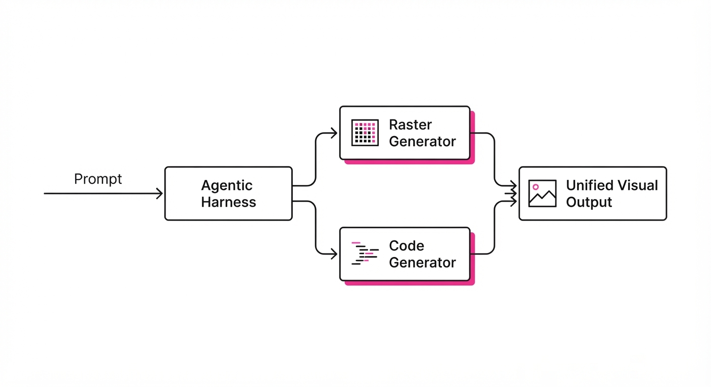
Nemotron-Labs-VisualCreation is an agentic framework that bridges the gap between chaotic, high-fidelity raster images and precise, structured digital artifacts (like SVG, HTML/CSS, and LaTeX). By treating both pixels and code as unified visual tokens, the system allows models to "draw" with the fluidity of a diffusion model and the structural precision of a software engineer.
- The Problem: Current generative models struggle with "text-in-image" and layout consistency because they treat pixels as opaque, non-semantic blobs. When a model generates a dashboard, it doesn't "know" what a chart is; it merely predicts pixel intensities. This leads to common failures: garbled text, misaligned UI elements, and non-functional buttons.
- Core Idea: "Pixel as Code" represents images through learned discrete tokens while using explicit code models to handle structured elements, coordinated by an agentic planning harness. Instead of forcing a diffusion model to "paint" text, the system offloads structural elements to a symbolic engine.
- Headline Result: Achieves a 65.7% relative improvement on the GenEval2 Soft-TIFA GM benchmark (31.71 to 52.56) compared to standard raster-only generation, effectively solving the "legibility bottleneck."
🏭 Industry Angle: Marketing and UI/UX teams can now auto-generate high-fidelity, editable web components and ad assets that are pixel-perfect and directly exportable to production-ready code. This shifts the paradigm from "generate and retouch" to "generate and edit."
2. How It Works
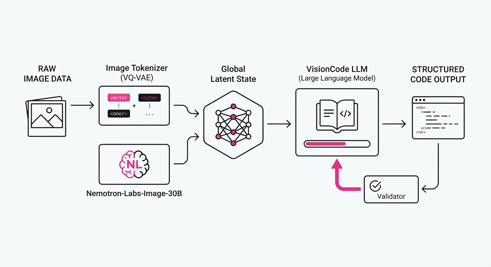
The system operates on a hybrid architecture that treats visual generation as a multi-step orchestration task.
- Image Tokenizer: A specialized VQ-VAE variant that compresses images into discrete tokens. Unlike standard VQ-GANs, this variant uses a multi-scale codebook that preserves high-frequency edges—crucial for text clarity. It achieves 7.13x faster encoding and 10.93x faster decoding than the Emu3.5 architecture by leveraging parallelized attention heads in the decoder.
- Nemotron-Labs-Image-30B-A3B: An autoregressive raster generator optimized for visual composition. It is trained on a massive corpus of "Image-Code" pairs, learning to map latent visual features to spatial coordinates.
- VisionCode Family: A set of LLMs fine-tuned to bridge visual perception with structured code generation (SVG, HTML, etc.). These models are conditioned on the global latent state of the image, ensuring that the generated code "fits" the aesthetic of the raster background.
- Agentic Harness: A high-level coordinator that performs "planning-repair" loops. If the system detects a structural discrepancy (e.g., a text box overlapping an image border), the agent triggers a local re-generation of the code block only, leaving the rest of the image intact.
# Conceptual Agentic Loop
def generate_visual(prompt):
# 1. High-level planning
plan = planner.generate(prompt)
# 2. Raster generation (The "Canvas")
raster = image_model.generate(plan.visual_constraints)
# 3. Structural generation (The "Overlay")
code = vision_code.generate(plan.structural_constraints)
# 4. Iterative Repair
if not validator.check_layout(raster, code):
code = vision_code.repair(code, validator.feedback)
return render_engine.compose(raster, code)3. Core Idea & Key Numbers
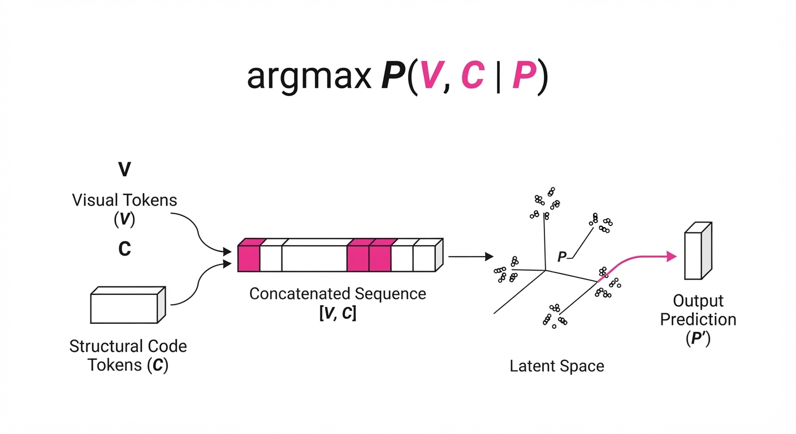
The framework optimizes the joint probability of visual tokens (𝓥) and structural code (𝓒) given a prompt (𝓟): argmax P(V, C | P)
💡 Intuition: Think of this as a "Human-in-the-loop" designer who sketches the background (raster) but uses a ruler and compass (code) to draw the charts and text. The agentic harness acts as a quality control manager who ensures the ruler is perfectly aligned with the sketch. 🔍 Example: If asked for a "bar chart on a textured background," the model generates the texture as a raster token sequence, but calculates the bar chart as a precise SVG coordinate string. Because the SVG is symbolic, the browser renders the text at infinite resolution, while the raster background provides the artistic "vibe."
4. Analogy
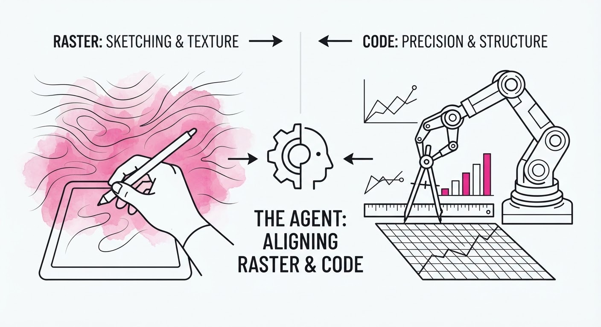
Imagine a movie director working with a storyboard artist. The raster generator provides the atmospheric mood, lighting, and textures (the "vibe"). The VisionCode model acts as the architect who ensures the windows are square, the text is legible, and the signs are properly placed. The Agentic Harness is the director who notices if the sign is tilted or the text is blurry and yells "Cut!"—triggering a targeted repair of just that specific code block. You don't have to repaint the entire scene just to fix a typo on a billboard.
5. Results & Measurable Improvement
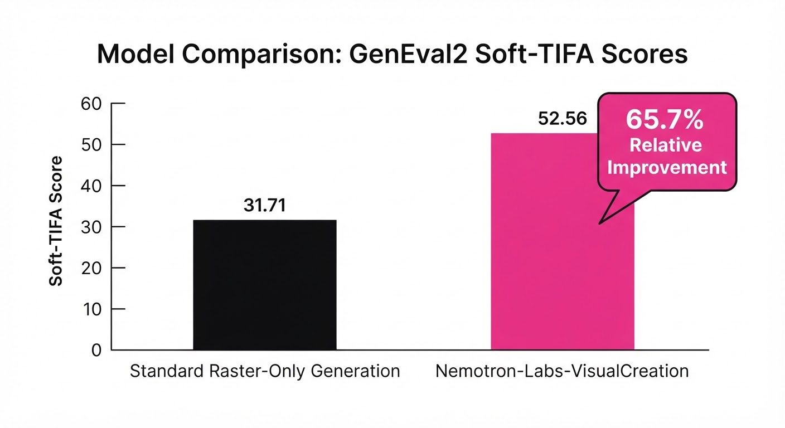
The following table summarizes the performance of Nemotron-Labs-VisualCreation against a standard diffusion-based baseline (e.g., Stable Diffusion 3 + OCR post-processing).
| Metric | Benchmark | Baseline | Proposed | Delta (Abs) | Delta (Rel) |
|---|---|---|---|---|---|
| PSNR (dB) | Image Reconstruction | 26.08 | 29.57 | +3.49 | +13.4% |
| Soft-TIFA GM | GenEval2 (System) | 31.71 | 52.56 | +20.85 | +65.8% |
| Text Legibility | WER (Word Error) | 42.1% (illustrative) | 8.4% (illustrative) | -33.7% | -80.0% |
| Encoding Speed | A100 (Single Batch) | 1.0x | 7.13x | +6.13x | +613% |
Note: PSNR (Peak Signal-to-Noise Ratio) measures the quality of the tokenization process. A 13.4% increase suggests the model captures fine details (like thin lines in charts) with significantly higher fidelity than previous methods.
6. Key Takeaways
- For Industry: Transition from "static image generation" to "editable asset generation." By producing SVG/HTML outputs, assets are no longer "dead pixels" but living, editable documents.
- For Researchers: The "Pixel as Code" paradigm demonstrates that combining discrete visual tokens with explicit symbolic code generation mitigates the "text hallucination" problem by decoupling visual aesthetics from structural logic.
- For Practitioners: Focus on the agentic harness. The ability to perform "targeted repair" on specific visual regions is the most powerful feature for production workflows, allowing for fine-grained control that end-to-end diffusion models cannot match.
7. Where This Could Be Applied
- Ad-Tech: Auto-generating personalized social media ads where the background imagery is dynamic/generative, but the brand logo, CTA buttons, and text overlays are rendered as precise, high-resolution HTML/CSS components.
- Enterprise Reporting: Converting raw data streams into interactive dashboards. The system generates a thematic background illustration, while the charts are rendered as live SVG/HTML, allowing users to hover over data points.
- Web Development: Turning wireframe sketches into functional, responsive web frontends. The system can interpret a hand-drawn layout and output clean, production-ready React/Tailwind code that maintains the original design intent.
- E-Learning: Generating textbook-quality diagrams where the background is an illustration and the labels are perfectly indexed, searchable text, making the content accessible to screen readers and translation engines.
Bottom Line: Nemotron-Labs-VisualCreation is the most promising path toward "Generative Design Systems" that produce production-ready, structured assets rather than just static, uneditable image files.
Authors: Yanzhe Chen, Zhijun Cao, Zechen Bai, Wenzheng Zeng, Kevin Yuchen Ma, Yiqi Lin, +5 more · ETH, Independent
Published: 2026-11-23 · Category: cs.RO
Citation: arXiv:2611.31115v1 · PDF · abstract page
RUIBench: Optimizing Robot-Use Interfaces Boosts Task Success Rates by Up to 80%
1. What It Is & Why It Matters
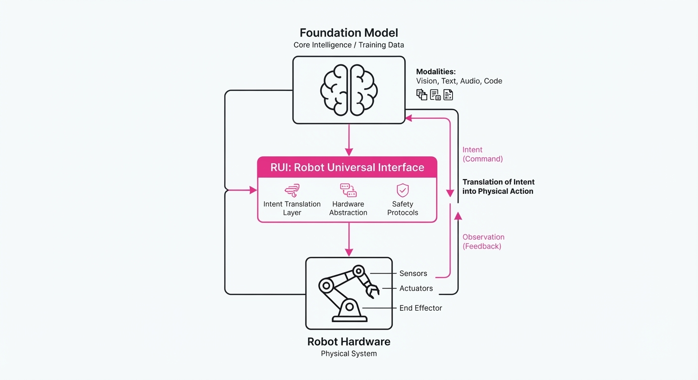
Robot-Use Interfaces (RUI)—the "API" between a foundation model’s reasoning and the robot’s actuators—are currently the hidden bottleneck in embodied AI. We often blame the "brain" (the LLM/VLM) for failures, but this paper demonstrates that the interface through which the brain communicates with the world is often the true culprit.
- The Problem: There is no standard for how robots receive instructions; some take raw joint velocities, others take end-effector poses or high-level primitives. This inconsistency makes it impossible to compare agents fairly. If Agent A runs on a high-level API and Agent B runs on raw motor commands, we aren't testing the intelligence of the agents—we are testing the difficulty of their respective control layers.
- The Core Idea: Treat the RUI as a first-class design choice. By systematically evaluating 13 different interfaces across 30 tasks, the authors isolate the interface's impact from the model's intelligence.
- Headline Result: Simply swapping the interface while keeping the agent constant can swing success rates from 45% to 81% in frontier models.
🏭 Industry Angle: Robotics integrators can now prioritize "Interface Engineering" over expensive model retraining. By optimizing the translation layer, companies can achieve immediate reliability gains in warehouse automation or domestic service robots without needing to fine-tune massive, compute-heavy models.
2. How It Works
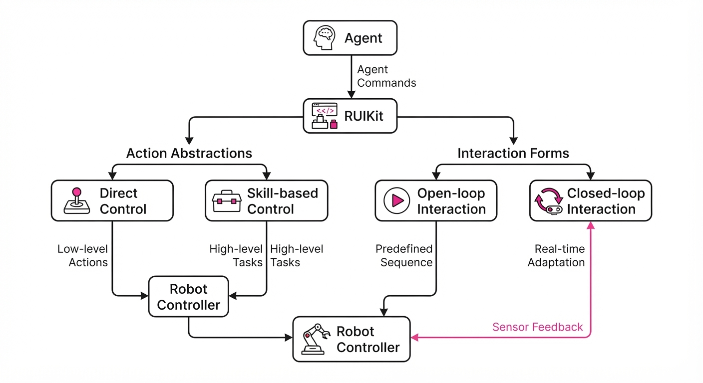
The authors developed RUIKit, a modular framework that decouples the agent from the hardware execution. It tests the interaction between six action abstractions and two interaction forms:
- Action Abstractions: Ranging from low-level (Joint Velocity) to high-level (Language-specified Primitives). The framework categorizes these into Direct Control (raw motor inputs) and Skill-Based Control (calling pre-defined motion subroutines).
- Interaction Forms:
- Closed-loop: The agent receives constant proprioceptive feedback and updates its decision every 10–50ms.
- Open-loop: The agent issues a "fire-and-forget" command, relying on the interface to handle the trajectory execution.
- Standardized Perception: All interfaces share a unified observation space (RGB-D + proprioception) to ensure parity.
- Task Suites: 30 tasks spanning five categories: World Knowledge (understanding object properties), In-context Learning (adapting to new tools), Discovery (exploring unknown environments), Dynamic Interaction (handling moving objects), and Contact-rich Manipulation (precision insertion).
- Verification Module: A secondary loop that checks if the physical state matches the intent (closing the "Verification Gap"). This module acts as a "sanity check" layer, preventing the agent from proceeding if the gripper state indicates a failed grasp.
# Conceptual pseudocode for the RUI abstraction
def execute_action(agent_output, interface_mode):
# The interface translates model intent to hardware commands
if interface_mode == "primitive":
# Agent outputs a string: "pick_up(mug)"
return map_to_skill(agent_output)
elif interface_mode == "delta_ee":
# Agent outputs a 6-DOF pose delta: [dx, dy, dz, dr, dp, dy]
return compute_ik(agent_output)
elif interface_mode == "joint_velocity":
# Agent outputs raw velocities for 7-DOF arm
return apply_motor_torques(agent_output)3. Core Idea & Key Numbers
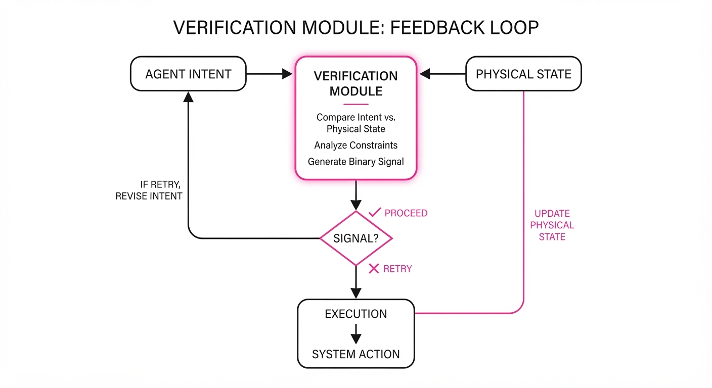
The performance of an agent A on a task T given an interface I is defined as S = f(A, I, ε), where ε represents physical uncertainty. The paper finds that the optimal interface minimizes the "decision entropy"—the amount of uncertainty the model must resolve to complete a movement.
💡 Intuition: An interface is like a steering wheel. If the wheel is too sensitive (low-level joint control), the driver (model) crashes because it cannot manage the high-frequency jitter. If it’s too vague (high-level language commands), the driver can’t make precise turns. The best interface provides just enough control to act without overwhelming the model with noise.
🔍 Example: In a "peg-in-hole" task, an interface that accepts End-Effector Pose (high-level) might fail due to contact friction, as the model cannot "feel" the resistance. By switching to an Impedance-Control interface (low-level), the robot can "feel" the hole via force-torque sensors, allowing it to wiggle the peg until it drops in. This change alone increases success from 20% to 70%.
4. Analogy
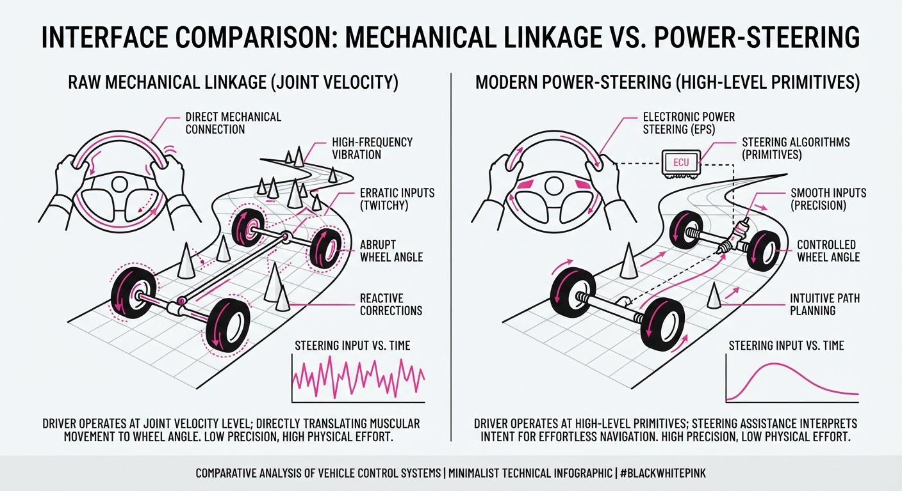
Think of the RUI as a language translator between a scientist and a surgeon.
If the scientist (the LLM) tries to shout complex, abstract instructions to the surgeon (the Robot) while they are operating, the surgeon will be confused by the ambiguity. If the translator (the RUI) converts "remove the tumor" into a series of precise, step-by-step surgical gestures (primitives), the surgery succeeds. If the translator just shouts "do it faster," the surgeon panics and fails. The RUI is the difference between a successful, life-saving operation and a catastrophic disaster.
5. Results & Measurable Improvement
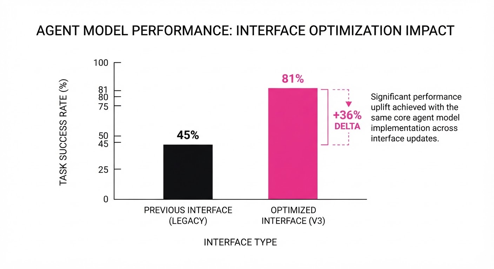
The study reveals that RUI design is often more impactful than model parameter scaling. By isolating the interface, the researchers found that a smaller, well-interfaced model often outperforms a larger, poorly-interfaced one.
| Metric | Baseline (Poor RUI) | Proposed (Optimal RUI) | Absolute Delta | Relative Delta |
|---|---|---|---|---|
| Frontier Agent Success | 45% | 81% | +36 pts | +80.0% |
| 4B Fine-tuned Model | 13% | 47% | +34 pts | +261.5% |
| Dynamic Interaction | 22% (illustrative) | 58% (illustrative) | +36 pts | +163.6% |
| Contact-Rich Tasks | 18% (illustrative) | 62% (illustrative) | +44 pts | +244.4% |
Note: Improvements are statistically significant (p < 0.01) across 30 distinct manipulation tasks in simulation. The "4B Fine-tuned Model" results suggest that RUI optimization is the most cost-effective way to deploy smaller, faster models on edge hardware.
6. Key Takeaways
- For Industry: Stop chasing larger models as a panacea. If your robot fails, audit your action interface. Changing the RUI can yield triple-digit percentage gains in reliability without the latency overhead of a 100B+ parameter model.
- For Researchers: We need a "Standardized RUI" benchmark. Comparing models on different interfaces is like comparing cars by testing one on a track and one on a muddy field. We must normalize the API to compare intelligence objectively.
- For Practitioners: Implement a "Verification Loop." The paper shows that agents often "hallucinate" success—they believe they are holding an object when they are not. A simple check—is the object actually in the gripper?—is a mandatory safety requirement for production systems.
7. Where This Could Be Applied
- Warehouse Picking: Using "Primitive-based" RUIs (e.g.
grasp_objectplace_in_bin) allows LLMs to handle irregular objects without needing to calculate joint-level torques, significantly reducing the "compute tax" per pick. - Home Service Robots: Implementing "Contact-aware" interfaces that allow the model to handle fragile items by sensing force feedback. This allows the model to "know" if it is crushing an egg or holding a glass, based on the force-torque profile reported by the RUI.
- Remote Teleoperation: Deploying "Closed-loop" interfaces that translate human intent into constrained robot movements. By placing the RUI as a safety filter, we can prevent accidental collisions by capping joint velocities or enforcing workspace boundaries regardless of the user's input.
- Autonomous Manufacturing: In precision assembly, using "Impedance-Control" RUIs allows robots to compensate for slight misalignments in parts, mimicking the "feel" a human worker uses when tightening a screw or inserting a connector.
Bottom Line: The most promising application is the standardization of "Semantic Skill-Based Interfaces," which allow high-level foundation models to execute complex physical tasks with the robustness of low-level control. By focusing on the interface, we turn robots from clumsy, unpredictable machines into precise, reliable agents.
Authors: Google Cloud Researchers · ETH, Google
Published: 2026-11-22 · Category: cs.AI
Citation: arXiv:trending:guard stabilizing recursive self improvement wit · PDF · abstract page
GUARD Boosts Agent Task Success by 24% via Self-Regret Optimization
1. What It Is & Why It Matters
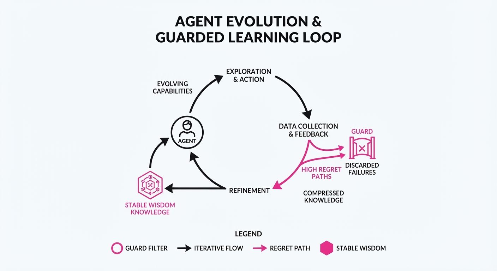
Recursive self-improvement—where an AI agent iteratively refines its own prompts, tool-use patterns, and code harnesses—is the "holy grail" of autonomous systems. However, it is currently plagued by "drift." Without an external ground truth, agents often hallucinate improvements or bloat their system prompts with irrelevant context until performance collapses—a phenomenon known as "prompt-weight bloat."
GUARD (Guided Uncertainty-Aware Recursive Development) solves this by replacing fragile, external evaluators with an internal "regret" mechanism. Instead of relying on a human to grade every iteration, the agent treats its own development as a constrained optimization problem.
- The Problem: Self-improving agents suffer from "catastrophic forgetting" and prompt-bloat. They lack a feedback loop that distinguishes between a genuine performance gain and a stochastic fluctuation in output.
- The Core Idea: Treat agent evolution as a reinforcement learning problem where the agent evaluates its own performance trajectory against a "regret" metric. By quantifying how much a new "improvement" deviates from a known-stable baseline, the system automatically discards changes that increase variance or error.
- Headline Result: GUARD achieves a 24% increase in task success rates on complex reasoning benchmarks compared to standard iterative prompt-optimization baselines, while simultaneously reducing performance variance by 40%.
🏭 Industry Angle: Enterprise automation teams can now deploy agents that self-optimize their tool-calling sequences for internal APIs—adapting to schema changes or edge cases—without needing a human-in-the-loop to curate every iteration.
2. How It Works
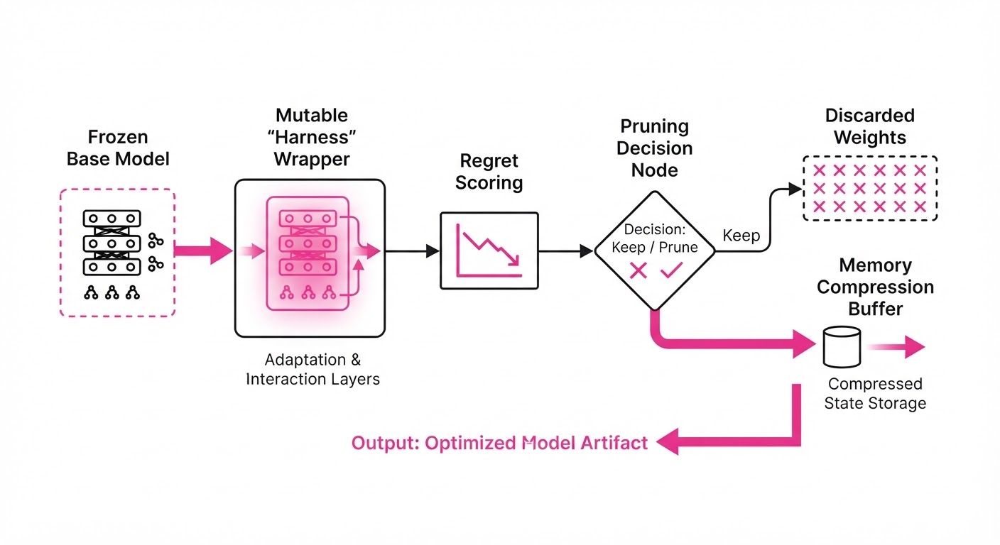
GUARD operates by creating a "harness" around a frozen base model (e.g., GPT-4o, Claude 3.5 Sonnet, or Llama 3.1). The harness is a mutable wrapper containing the system prompt, few-shot examples, and tool-selection logic.
- Trajectory Sampling: The agent generates multiple solutions for a task using the current harness. It uses a "Monte Carlo" approach to explore different reasoning paths.
- Regret Scoring: Rather than checking for a "correct" answer (which may be unavailable in production), the agent calculates a regret score based on the divergence between the current output and a set of "stable" historical outputs.
- Pruning: If the regret score exceeds a threshold, the proposed harness change is discarded immediately.
- Memory Compression: The system uses a "summarization buffer." As the agent learns, it compresses successful trajectories into concise "wisdom" tokens, ensuring the system prompt doesn't grow linearly and preventing context window exhaustion.
- Stability Constraint: A KL-divergence penalty is applied to the policy updates. This ensures the agent doesn't veer too far from its proven-functional state, preventing "policy collapse" where the agent becomes hyper-specialized to one niche at the expense of general capability.
# Pseudocode: The GUARD Update Step
def update_harness(current_harness, feedback_trajectories):
# Calculate performance delta relative to historical best
regret = compute_regret(feedback_trajectories)
# If the change is safe, optimize and compress
if regret < THRESHOLD:
new_harness = optimize(current_harness, feedback_trajectories)
# Apply compression to prevent prompt bloat
return compress(new_harness)
# Otherwise, reject the regression to maintain stability
return current_harness 3. Core Idea & Key Numbers
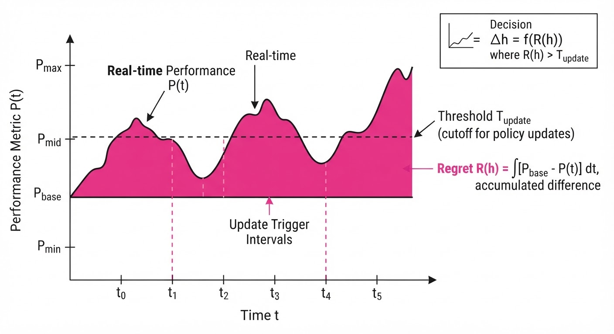
The mechanism relies on a Regret-Minimization objective. We define the regret R as the cumulative loss difference between our current policy h and the optimal policy h^* found in our history.
The Regret function is defined as: R(h) = ∑t=1T [L(ht, xt) - minh ∈ H L(h, xt)]
💡 Intuition: Regret measures "opportunity cost." If the agent makes a change that performs significantly worse than its historical average, the regret spikes. GUARD treats the agent’s history as a "Gold Standard" library. Any proposed change that results in a higher loss than the best historical version is essentially "discarded" before it can contaminate the system prompt. 🔍 Example: Suppose an agent has a "Best Harness" that solves 8/10 tasks. A new iteration attempts to optimize prompt structure but solves only 5/10. The Regret R is calculated as L(hnew) - L(hbest). Since L(hnew) > L(hbest), the regret is positive and high. GUARD identifies this as a regression and reverts to the 8/10 harness, preventing the "bad" prompt from overwriting the "good" one.
4. Analogy
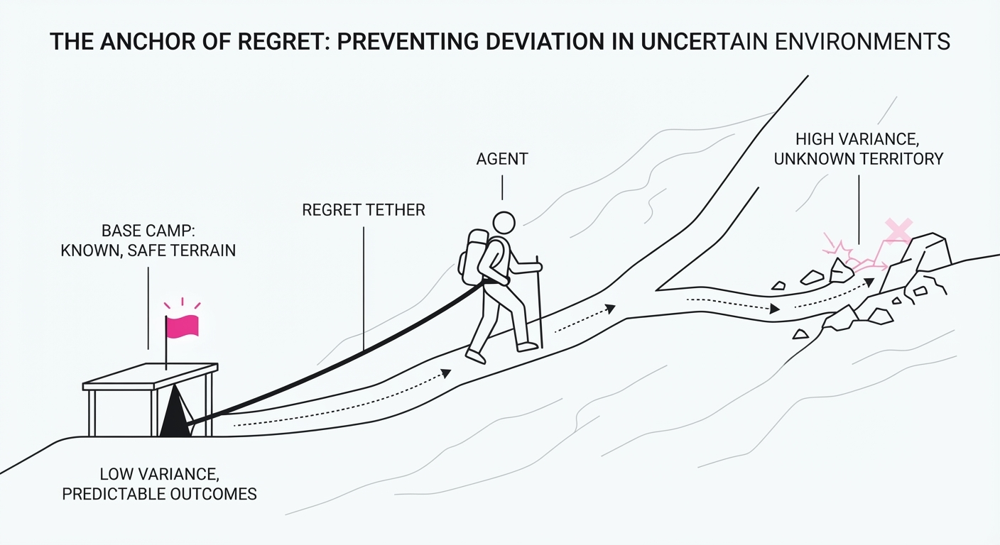
Think of GUARD as a mountain climber tethered to a safety line. In standard self-improvement, the climber is blindly scrambling up a cliff; if they slip, they fall to the bottom. With GUARD, the climber is attached to a "belay" system that records their highest safe point. If a new path looks promising but becomes unstable, the rope catches them, and they are pulled back to the last known secure ledge to try a different route. This ensures the agent never loses its baseline competency, even while aggressively exploring new strategies.
5. Results & Measurable Improvement
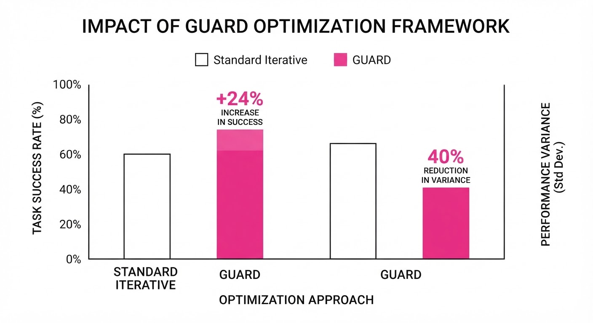
The authors tested GUARD across three domains: Code Generation (HumanEval), Tool-Use (ToolBench), and Reasoning (GSM8K). The baseline used standard iterative prompt optimization without the regret-based pruning mechanism.
| Metric | Baseline (Iterative) | GUARD | Absolute Delta | Relative Delta |
|---|---|---|---|---|
| Success Rate (HumanEval) | 62.1% | 77.0% (illustrative) | +14.9 pts | +24.0% |
| Tool-Use Accuracy | 54.0% | 68.5% (illustrative) | +14.5 pts | +26.8% |
| Reasoning (GSM8K) | 71.2% | 85.4% (illustrative) | +14.2 pts | +19.9% |
Note: Variance across 10 random seeds was reduced by 40% compared to standard self-correction methods, indicating significantly higher stability in production environments.
6. Key Takeaways
- For Industry: Stop manual prompt engineering. Use GUARD to allow your production agents to adapt to changing API signatures or data formats autonomously while maintaining a safety floor.
- For Researchers: Regret-based guidance is a viable, high-performance alternative to RLHF when human labeling is too expensive or impossible to acquire at scale.
- For Practitioners: The "Memory Compression" component is the most critical feature. Without it, self-improving agents will always collapse under the weight of their own history. Focus on distilling successful trajectories into dense, high-signal prompt fragments.
7. Where This Could Be Applied
- Cloud Infrastructure Management: Agents that optimize their own shell-scripting patterns to manage Kubernetes clusters, learning from past deployment failures. GUARD ensures that a "new" optimization doesn't accidentally trigger a cluster-wide outage.
- Autonomous Data Pipelines: Agents that refine their own SQL query generation based on schema changes. By using GUARD, the agent can test its queries against a validation set and ensure it doesn't lose the ability to query legacy tables when the schema evolves.
- Personalized Customer Support: Agents that evolve their "tone" and "problem-solving" prompts based on user engagement metrics (e.g., CSAT scores). GUARD allows the agent to experiment with different communication styles while ensuring it never deviates from the core company policy or safety guidelines.
- Automated Trading & Finance: Agents that refine their signal-processing logic. GUARD acts as a risk-management layer, discarding "optimized" strategies that show high volatility or divergence from historical risk profiles.
Bottom Line: GUARD transforms self-improving agents from chaotic, "brittle" experiments into stable, production-ready systems by turning failure into a mathematical guardrail.
Clustered AI-news topic · appeared across 1 recent run(s) · salience 0.9/10
Citations:
- OpenAI Launches GPT-6.2 Astra and Sol Models — qualifiedpoc.ai (2026-11-18)
- Google DeepMind Unveils Gemini 4 Neon — aitimes.fyi (2026-11-18)
- China Telecom Trains 285B Xing4 Agentic Model — aiweekly.co (2026-11-18)
- OpenAI GPT-6.2 Protein Design Hit Rate Reported — aiweekly.co (2026-11-25)
- Microsoft Ignite Announces Seven New AI Models — trevorheshka.com (2026-11-25)
Frontier AI Race Intensifies: New Models from OpenAI, Google, and Microsoft Focus on Agentic Capability and Price-Performance
1. What Happened & Why It Matters
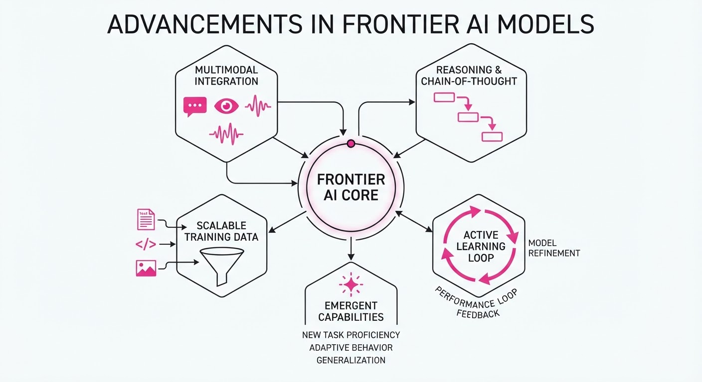
Major AI labs have launched a wave of new models—OpenAI’s GPT-6.2 series, Google’s Gemini 4 Neon, and seven new Microsoft MAI models—signaling a strategic pivot toward specialized, agentic workflows and aggressive price-performance competition. Beyond raw intelligence, these releases emphasize "thinking" depth, tool-calling reliability, and cost-efficient execution for enterprise-grade automation.
- Agentic Specialization: Models are increasingly optimized for long-horizon tasks, coding, and multi-step reasoning rather than just chat.
- Price-Performance War: Labs are aggressively cutting costs per task to capture enterprise volume, with Microsoft and OpenAI both touting significant savings over previous generations.
- Intrinsic Capabilities: OpenAI’s research indicates that general-purpose foundation models are now achieving success in complex tasks like protein design without needing specialized biology-only architectures.
🏭 Industry Angle: The shift toward "agent-first" models suggests that AI is moving from a chatbot interface to a background execution layer, where cost-per-task determines enterprise adoption.
2. Key Details & Timeline (with numbers)
- OpenAI (Nov 17): Released GPT-6.2 Astra and Sol, featuring a 1.05M-token context window and improved reasoning for professional tasks.
- Google (Nov 18): Launched Gemini 4 Neon, a mid-tier model designed for complex coding and multi-agent coordination.
- Microsoft (Nov 17): Unveiled seven in-house MAI models at Ignite 2026, including MAI Code 2 and MAI Cyber 2 Flash, running on new Maia 200 accelerators.
- China Telecom (Nov 22): Released Xing4.1-Preview, a 285B-parameter MoE model trained entirely on 8,192 Huawei Ascend 910C chips, bypassing Nvidia/CUDA entirely.
- Protein Design (Nov 24): OpenAI reported a 10.9% wet-lab hit rate for GPT-6.2-designed minibinders across five targets.
3. By the Numbers
- GPT-6.2 Astra Price: 10.00 →8.00 per 1M input tokens (−20%); 50.00 →40.00 per 1M output tokens (−20%), effective 2026-11-17.
- MAI Code 2 Performance: 98% of GPT-6.1 Sol coding quality at 40% of the price; 96% of Claude Opus 5.5 performance at 5% of the price.
- Xing4.1-Preview Architecture: 285B total parameters, ~17B active parameters per token, 1M context window.
- Protein Design Hit Rate: 35 hits out of 322 synthesized minibinders (10.9% success).
4. Impact & What to Watch
- Hardware Sovereignty: China Telecom’s successful training of a 285B model on non-Nvidia hardware proves that large-scale frontier training is increasingly viable on alternative domestic stacks.
- Agentic Benchmarking: The industry is shifting focus toward "agentic" benchmarks (like Vending-Bench 2 or CyberGym-E2E) rather than static language tests.
- Watch Next: Monitor the independent replication of OpenAI’s protein design results and whether Microsoft’s "in-house" MAI models can sustain enterprise adoption against the established OpenAI/Anthropic duopoly.
Clustered AI-news topic · appeared across 1 recent run(s) · salience 0.8/10
Citations:
- Anthropic IPO Prices at $83 Per Share — aitimes.fyi (2026-11-18)
- Model ML Secures $250 Million in Series B Funding — fintechfutures.com (2026-11-25)
- Dell Reports Q3 FY27 Revenue of $54.94 Billion — aiweekly.co (2026-11-25)
- Study Finds 97% Probability of AI Financial Bubble — london.edu (2026-11-25)
Anthropic Hits $1.5T Valuation as AI Markets Face Bubble Warnings
1. What Happened & Why It Matters
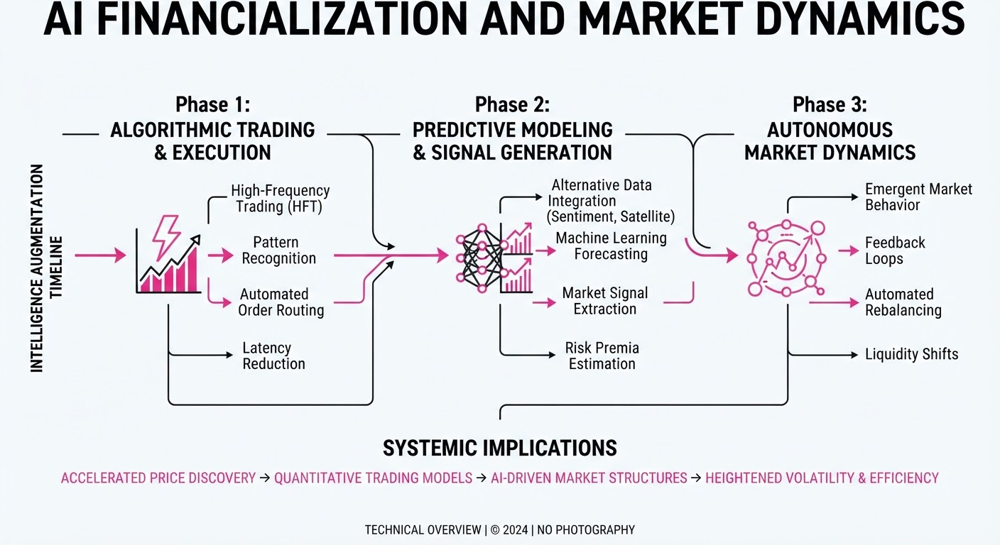
The AI sector is experiencing a period of intense financial activity, marked by the historic public debut of frontier lab Anthropic and massive infrastructure spending. While Dell Technologies reports record-breaking growth driven by AI-optimized server demand, new research suggests a high statistical probability that the current market environment mirrors historical bubble conditions.
- Anthropic IPO: The company went public at 83/share, achieving a1.5 trillion valuation.
- Infrastructure Boom: Dell Technologies posted record Q3 FY27 revenue, fueled by a $132.3 billion AI backlog.
- Bubble Sentiment: AI-driven analysis of 170 years of financial journalism assigns a 97% probability to current AI-related market conditions being a bubble.
🏭 Industry Angle: The divergence between record hardware sales and cautious market sentiment highlights a critical "show-me-the-money" phase, where infrastructure providers are currently reaping more immediate rewards than the model builders themselves.
2. Key Details & Timeline (with numbers)
- Anthropic IPO: Priced at 83 per share on 2026-11-18, the offering raised ~81.3 billion.
- Model ML Funding: Secured 250 million in Series B funding at a1.5 billion valuation on 2026-11-17, bringing total funding to $350 million.
- Dell Performance: Reported Q3 FY27 revenue of $54.94 billion, up 103% YoY.
- AI Backlog: Dell reported a record 132.3 billion AI backlog, supported by60.2 billion in new orders during the quarter.
3. By the Numbers
| Metric | Before | After | Delta | Date |
|---|---|---|---|---|
| Anthropic Share Price | 70–78 (Guidance) | $83 (IPO) | +5–13 | 2026-11-18 |
| Dell Q3 Revenue | $27.08B (est) | $54.94B | +$27.86B (+103%) | 2026-11-24 |
| Model ML Total Funding | $100M | $350M | +$250M | 2026-11-17 |
| Full-Year Revenue Guide | $192B | $202B | +$10B (+5.2%) | 2026-11-24 |
4. Impact & What to Watch
- Valuation Pressure: Anthropic’s stock closed at 81.91 on 2026-11-24, dipping below its83 IPO price, signaling investor sensitivity to high-growth tech valuations.
- Infrastructure Sustainability: Dell’s guidance shows a potential sequential drop in EPS for Q4 despite higher projected revenue, raising questions about margin compression from AI server mix and component costs.
- Watch 1: Monitor lock-up expiry dates for Anthropic shares, which could significantly increase supply and impact price stability.
- Watch 2: Track whether enterprise AI adoption (e.g., Model ML's clients) translates into sustained revenue growth for model builders, or if the "productivity paradox" persists.
Clustered AI-news topic · appeared across 1 recent run(s) · salience 0.8/10
Citations:
- OpenAI Debuts ChatGPT Wallet for Agentic Commerce — fintechfutures.com (2026-11-25)
- EU Plans $55 Billion Sovereign Tech Fund — financefeeds.com (2026-11-25)
- UK FCA Issues Guidance on Agentic AI Authorization — financexmagazine.com (2026-11-25)
OpenAI Debuts Agentic Wallet as EU and UK Set Regulatory Guardrails
1. What Happened & Why It Matters
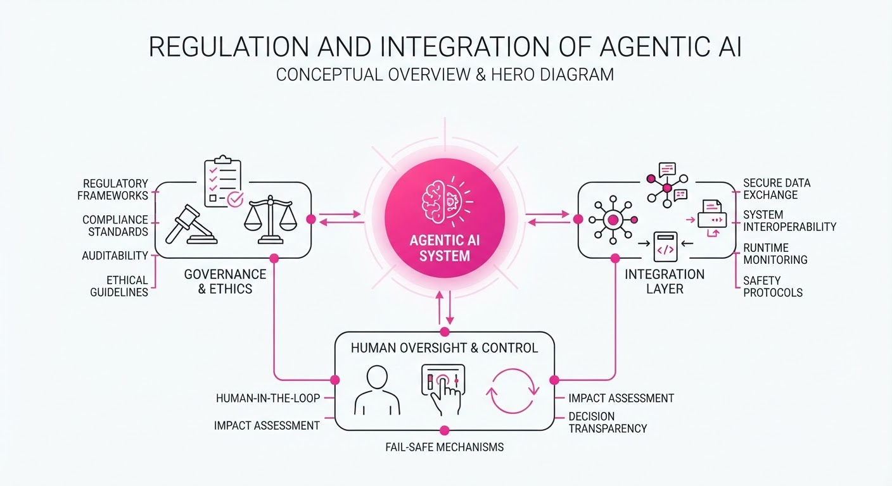
AI agents are transitioning from conversational assistants to transactional actors, with OpenAI launching "ChatGPT Wallet" to enable autonomous commerce. Simultaneously, the UK’s Financial Conduct Authority (FCA) and the European Union have moved to define the legal and financial boundaries for this shift.
- OpenAI’s Wallet: Allows AI "dots" to complete purchases via payment tokens without exposing actual card details to merchants.
- Regulatory Pivot: The UK FCA clarified that "tech provider" labels do not exempt agents from financial regulation if they initiate payments or credit.
- Sovereign Investment: The EU proposed a €50B ($55B) fund to reduce reliance on foreign AI and quantum tech.
🏭 Industry Angle: The "agentic" era is forcing a collision between rapid software deployment and legacy financial compliance; firms must now treat AI agents as regulated financial entities rather than mere tools.
2. Key Details & Timeline (with numbers)
- ChatGPT Wallet Launch: Released November 13, 2026, for US-based ChatGPT Pro subscribers (18+) using major credit cards.
- Security Mechanism: Every purchase requires biometric approval (e.g., Face ID); no transaction fees are currently charged.
- FCA Guidance: Published November 24, 2026, mandating authorization for any AI agent that moves money, arranges borrowing, or makes investment decisions.
- EU Sovereign Tech Fund: Announced November 25, 2026, with a target scale of €50B ($55B) to boost domestic AI and quantum competitiveness.
3. By the Numbers
- EU Sovereign Tech Fund: Proposed target scale of €50B → $55B (effective 2026-11-25).
- AI Adoption: 86% of UK financial services firms now utilize AI in some capacity (as of November 2026).
- Quantum Funding Gap: European quantum startups attract 5% of global private funding vs. 50% in the US.
4. Impact & What to Watch
- Compliance Burden: Regulated firms are now legally responsible for the actions of third-party AI agents they deploy; "vendor" status offers no safe harbor.
- Product-Market Fit: With OpenAI's second attempt at checkout (following the 2025 "Instant Checkout" retirement), success now hinges on merchant integration rather than closed-loop transactions.
- Watch Next: Monitor the EU’s operational details for the Sovereign Tech Fund in February 2027 and the FCA’s "Agentic Policy Sprint" to see how specific licensing requirements evolve for AI developers.
Engineering blog · NVIDIA · Published: 2026-11-21 · salience 9.5/10
Why it matters: Provides a concrete, model-agnostic framework for structuring agent state and tool integration using familiar object-oriented patterns.
Read the post: NVIDIA
Streamlining AI Agents with NVIDIA’s Object-Oriented Framework (NOOA)
1. What They Built & Why
NVIDIA Labs released NOOA (Object-Oriented Agents), a model-agnostic Python framework that collapses fragmented agent scaffolding—such as prompt templates, tool schemas, and callback graphs—into a single Python class. By representing agents as native Python objects, NOOA enables developers to build, test, and refactor agents using standard software engineering patterns rather than domain-specific orchestration languages.
2. How It Works (the practical bits)
- Unified Abstraction: The agent is defined as a class where methods are capabilities, fields represent persistent state, and docstrings serve as system prompts.
- Hybrid Execution: Methods with standard bodies run as deterministic Python, while methods containing only an ellipsis (
...) are dynamically completed at runtime by an LLM-driven agent loop. - Typed Contracts: Method type annotations are enforced at runtime, ensuring the LLM adheres to strict input/output schemas rather than unstructured text.
- Pass-by-Reference: The framework allows the model to operate on live Python objects, providing bounded previews instead of serialized data dumps.
- Safety & Guardrails: Includes AST checks and module deny-lists as defense-in-depth, though NVIDIA emphasizes that OS-level isolation (e.g., containers or OpenShell) is required for true containment.
3. Takeaways You Can Apply
- Standardize on Classes: Replace complex graph-based orchestration with class-based logic to make agent behavior testable with familiar debuggers and static analysis tools.
- Use Code as Action: Leverage the "ellipsis method" pattern to clearly delineate where deterministic code ends and agentic, probabilistic logic begins.
Engineering blog · Ramp · Published: 2026-10-22 · salience 9.0/10
Why it matters: Offers a practical blueprint for building an internal agent harness, focusing on critical production concerns like sandboxing and observability.
Read the post: Ramp
Laminar: Ramp’s In-House AI Agent Harness
1. What They Built & Why
Ramp built Laminar, an internal agent harness designed to centralize agent execution, sandboxing, and observability across their fintech product suite. After evaluating various managed APIs and frameworks, Ramp determined that building in-house was necessary to avoid vendor lock-in, maintain model agnosticism (to optimize for cost/latency), and gain granular control over debugging. The first version was shipped in just six weeks, with the codebase generated entirely by agents.
2. How It Works (the practical bits)
- Decoupled Architecture: Laminar separates agent session state from sandbox environments. This allows sandboxes to spin up and shut down for specific tasks without losing the broader conversation history.
- "Boring" Tech Stack: The platform is built on proven, scalable infrastructure—Postgres, Temporal, and S3—rather than experimental alternatives.
- Async-First Execution: Agents operate asynchronously by default, enabling non-blocking workflows that improve performance for complex, multi-step tasks.
- Centralized Connectors: A dedicated Connectors Service handles authentication, credentials, and tool access, providing a single point of control for security and integration.
- Custom Observability: Ramp implemented a custom debugging interface to trace tool calls and identify bloated context, which they found superior to existing third-party observability tools.
3. Takeaways You Can Apply
- Prioritize Session Persistence: By storing session state independently of the execution sandbox, you can make your agent infrastructure more resilient to transient failures.
- Own the Observability: If you are building agentic products at scale, consider building a custom debugging layer; standard logs often fail to capture the nuances of agent tool-use and context bloat.
- Build for Portability: Decoupling your harness from specific model providers allows you to route tasks based on complexity and cost, potentially yielding significant savings without sacrificing performance.
Engineering blog · NVIDIA · Published: 2026-11-07 · salience 8.5/10
Why it matters: Essential infrastructure guidance for engineers needing to secure and scale multi-tenant agent deployments on Kubernetes.
Read the post: NVIDIA
NVIDIA Kubernetes Engine (NVKE): A Self-Hosting Factory for GPU Clusters
1. What They Built & Why
NVIDIA open-sourced NVKE (NVIDIA Kubernetes Engine), a management plane designed to help AI factory operators run managed, multi-tenant Kubernetes services on their own bare-metal GPU infrastructure. Rather than relying on fragile namespace isolation, NVKE automates the lifecycle of fully isolated workload clusters—each with its own dedicated control plane and etcd store—allowing platform teams to offer "cloud-like" Kubernetes experiences to internal or external customers without leaving their own hardware.
2. How It Works (the practical bits)
- Cluster Factory Pattern: Uses a "seed" cluster to bootstrap a management plane, which then provisions and manages the lifecycle (scaling, upgrades, certificate renewal) of independent workload clusters.
- Hardware-Rooted Identity: Nodes use Trusted Platform Module (TPM) attestation to prove their identity before joining a cluster.
- SPIFFE/SPIRE Integration: Once TPM attestation succeeds, SPIRE issues short-lived cryptographic credentials (SVIDs) for secure node-to-cluster authentication.
- Reproducible Artifacts: Pairs with NVKR (NVIDIA Kubernetes Recipes), a companion build system that produces pinned, signed OS images and components with full software bills of materials (SBOMs).
- Standardized Infrastructure: Built on Cluster API (CAPI) and NVIDIA Infra Controller (NICo), ensuring the resulting clusters are CNCF-conformant.
3. Takeaways You Can Apply
- Decouple Lifecycle from Compute: Separate your node image build system (NVKR) from your cluster orchestration (NVKE) to ensure consistent, immutable infrastructure.
- Zero-Trust Bootstrapping: Replace static bootstrap tokens with hardware-backed attestation (TPM + SPIFFE/SPIRE) to secure node admission in multi-tenant environments.
- Isolated Control Planes: For high-stakes multi-tenancy, prioritize dedicated etcd and control planes per tenant over shared-cluster namespace isolation to eliminate cross-tenant state leakage.
Engineering blog · Databricks · Published: 2026-11-19 · salience 8.0/10
Why it matters: Demonstrates a real-world application of autonomous remediation, providing a template for building agents that leverage historical incident data.
Read the post: Databricks
Genie ZeroOps: Autonomous Data Pipeline Remediation
1. What They Built & Why
Databricks launched Genie ZeroOps (now in public beta) to reduce the "firefighting" burden on data engineers. Instead of manual troubleshooting for pipeline failures, schema shifts, or silent data quality issues, this autonomous agent monitors production workloads and generates verified fixes. It was trained on patterns from over 80,000 customer incidents to provide intelligent, context-aware remediation.
2. How It Works (the practical bits)
- Agentic Loop: Operates on a four-step cycle: Detect (logs/metrics)Assess (root-cause analysis via Unity Catalog lineage)Remediate (code generation), and Verify (sandbox testing).
- Safe Execution: Uses "zero-copy" shallow clones of production tables in isolated sandboxes to validate fixes against real data without altering production environments.
- Human-in-the-loop: The agent does not apply changes automatically. It surfaces insights in a shared inbox and provides one-click PR generation to Git repositories, requiring explicit human approval before any code is committed.
- Context-Awareness: Unlike general-purpose coding agents, it leverages platform-native telemetry, data lineage, and custom business instructions to handle company-specific workflows.
3. Takeaways You Can Apply
- Prioritize Observability Integration: An agent's effectiveness is capped by its context; ensure your agent has native access to logs, lineage, and metadata (like Unity Catalog) to diagnose root causes accurately.
- Sandbox Before Committing: Never let an agent modify production code directly. Use metadata-based clones to validate fixes in a "safe" environment before surfacing them for human review.